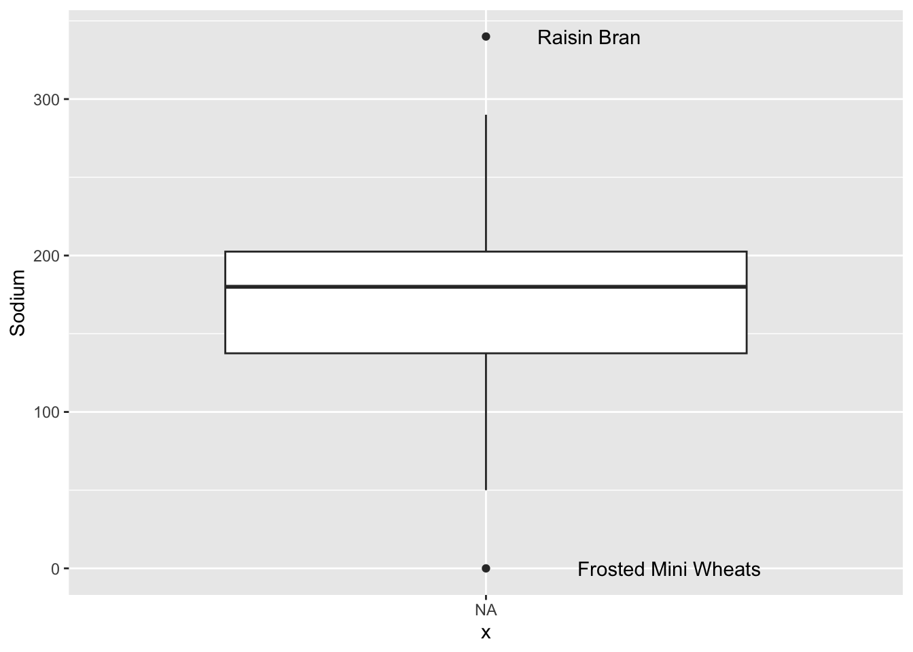
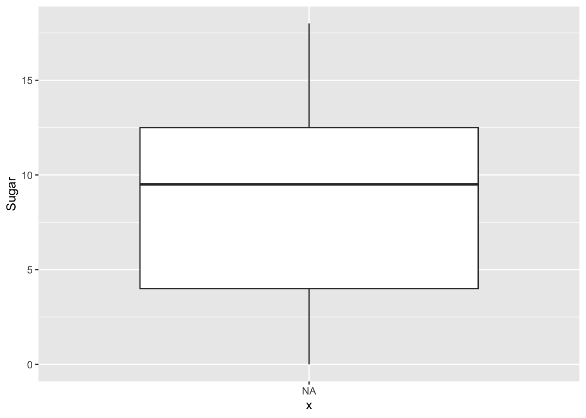
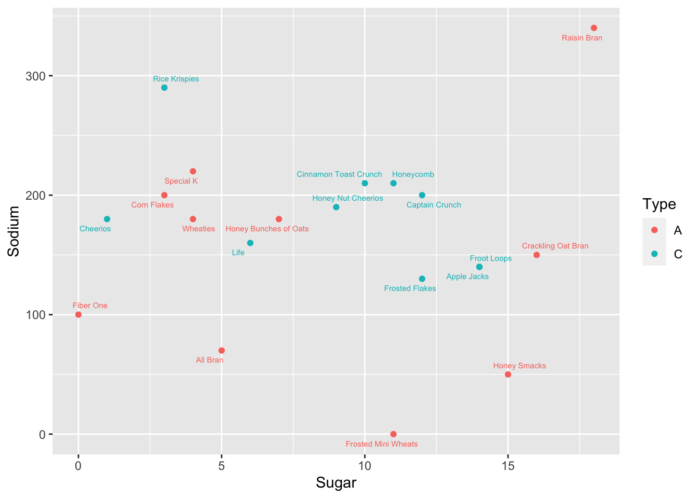

library(tidyverse)
library(ggplot2)
library(ggrepel)
knitr::opts_chunk$set(echo = TRUE, warning=FALSE, message=FALSE)Visualizing Cereal data
challenge_5
cereal
Saksham Kumar
Introduction to Visualization
Challenge Overview
Today’s challenge is to:
- read in a data set, and describe the data set using both words and any supporting information (e.g., tables, etc)
- tidy data (as needed, including sanity checks)
- mutate variables as needed (including sanity checks)
- create at least two univariate visualizations
- try to make them “publication” ready
- Explain why you choose the specific graph type
- Create at least one bivariate visualization
- try to make them “publication” ready
- Explain why you choose the specific graph type
R Graph Gallery is a good starting point for thinking about what information is conveyed in standard graph types, and includes example R code.
(be sure to only include the category tags for the data you use!)
Read in data
Read in one (or more) of the following datasets, using the correct R package and command.
- cereal.csv ⭐
cereal <- read_csv("_data/cereal.csv")
cerealBriefly describe the data
cereal %>% colnames()[1] "Cereal" "Sodium" "Sugar" "Type" The cereal data contains 4 variables: “Name”, Amount of “Sodium”, Amount of “Sugar” and the cereal “Type”
cereal %>% summary() Cereal Sodium Sugar Type
Length:20 Min. : 0.0 Min. : 0.00 Length:20
Class :character 1st Qu.:137.5 1st Qu.: 4.00 Class :character
Mode :character Median :180.0 Median : 9.50 Mode :character
Mean :167.0 Mean : 8.75
3rd Qu.:202.5 3rd Qu.:12.50
Max. :340.0 Max. :18.00 The above results contain general statistics about the data.
cereal$Type %>% unique()[1] "A" "C"There are only two types of cereal, A and C.
Tidy Data (as needed)
The data is alreadt tidy. It just needs a few additional columns to help visualize outliers.
To calculate outliers we will first create a new function that classfies the current value as an outlier
outlier <- function(x) {
return(x < quantile(x, 0.25) - 1.5 * IQR(x) | x > quantile(x, 0.75) + 1.5 * IQR(x))
}Next we mutate the data to include two new columns. One that specifies if the cereal is an outlier in Sodium quantities. Another that specifies if the cereal is an outlier in Sugar quantities.
cereal <- cereal %>%
mutate(sodium_outlier = ifelse(outlier(cereal$Sodium), cereal$Cereal, NA)) %>%
mutate(sugar_outlier = ifelse(outlier(cereal$Sugar), cereal$Cereal, NA))
cerealUnivariate Visualizations
First we plot two boxplots, one for sugar and one for sodium.
ggplot(cereal, aes(x=NA, y=Sodium)) +
geom_boxplot() +
geom_text(aes(label=sodium_outlier), na.rm=TRUE, hjust=-.5)
ggplot(cereal, aes(x=NA, y=Sugar)) +
geom_boxplot() +
geom_text(aes(label=sugar_outlier), na.rm=TRUE, hjust=-.5)
We can see that there are two Cereals that are categorized as outliers for Sodium levels: Raisin Bran and Frosted Mini Wheats. There are no outliers for Sugar levels.
Bivariate Visualization(s)
ggplot(cereal, aes(Sugar, Sodium, col=Type)) + geom_point() + geom_text_repel(size=2, aes(label=Cereal))
From the graph we can see that there seems to be no general correlation between Sodium and Sugar levels. Type C Cereals still have a more linear relationship between Sodium and Sugar, when compared to Type A Cereals.
Raisin Bran seems to have the highest Sugar and Sodium levels of all Cereals